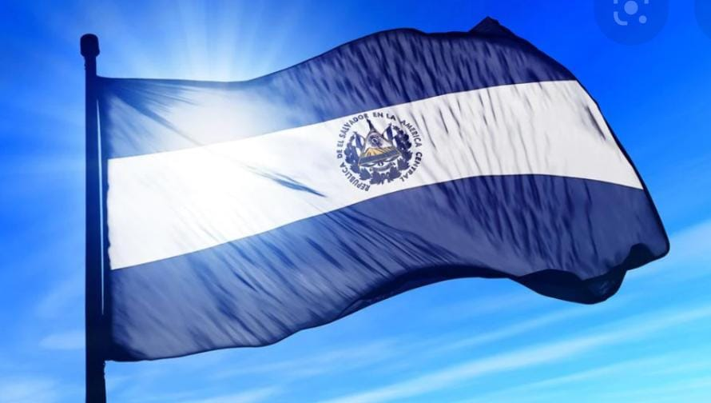
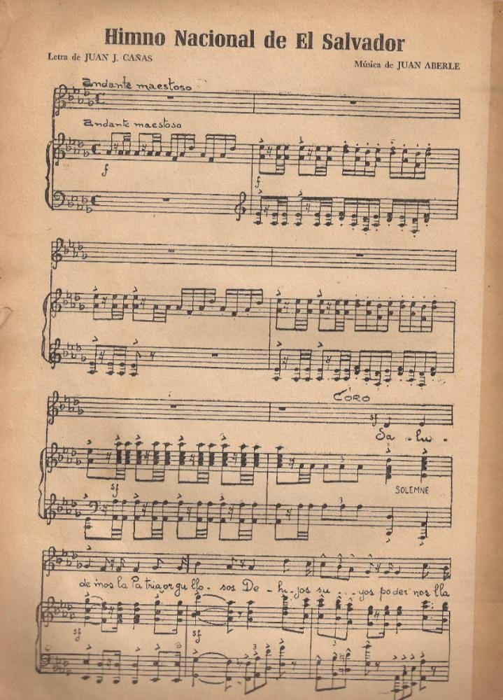

<!DOCTYPE html>
<html lang="es">
<head>
    <meta charset="UTF-8">
    <meta http-equiv="X-UA-Compatible" content="IE=edge">
    <meta name="viewport" content="width=device-width, initial-scale=1.0">
    <title>oracion a la bandera</title>
</head>
<body>
    <section id="page">
        <header>
            <nav>
                </nav>
                </header>
                <article></article>
                <footer></footer>
    </section>
    
</body>
</html>

<body>

    <section id="article">
        <!--Introduccion-->
        <article id="Introduccion">
            <h2>Introducion de la pagina web</h2>
            <div class="line"></div>
            <div class="articleBody clear"></div>
            <figure>
                
            </figure>
            <p>
                <br><b>Nombre:</b> Keila Merari Gonzales Medrano</br>
                <br><b>Grado:</b>1°primero Desarrollo Software "B"</br>
                <br><b>Departamento:</b>San Salvador</br>
                <br><b>Municipio:</b>San salvador</br>
            </p>
            <p>
                <br><b>Introduccion:</b></br>
                Esta pagina se trata de la la oracion a la bandera, del himno nacional,y la bandera del salvador.
            </p>
        

        

    <section id="page">
        <header>
            
            <nav class="clear">
                <ul>
                    <li><a href="#acerca">acerca de la Bandera</a></li>
                    <li><a href="#oracion a la bandera">oracion</a></li>
                    <li><a href="#himno">himno</a></li>

                </ul>
            </nav>
        </header>
    
        <section id="articles">
            <!--articulo acerca-->
            <article id="acerca">
                <h2>Acerca de la bandera</h2>
                <div class="line"></div>
                <div class="articleBody clear"></div>
                <figure>
                    
                </figure>
                <p>
                    La bandera de El Salvador es el pabellón que representa al país, y que, junto al escudo y el himno nacional, tiene la categoría de símbolo patrio. Consiste en un rectángulo dividido en tres franjas coloreadas con la representación de los países de Centroamérica. 
                </p>
                <p>
                    Escudo Nacional de El Salvador

                    Rafael Barraza Rodríguez, calígrafo salvadoreño, creó el escudo nacional. Fue el ganador de 30 participantes más en el concurso promovido por el entonces Ministerio de Guerra y Marina, en 1912. Este símbolo patrio ha sido inspiración para muchos escritores y poetas que, con el correr de los años, han dado diferentes interpretaciones.
                    
                    El triángulo equilátero -han dicho ellos- es el símbolo de Libertad, Igualdad y Fraternidad. Los dos mares abiertos, el espíritu de un pueblo en constante y solidaria comunión con las demás naciones libres. Los cinco colosos volcanes, surgidos en una fragosa entraña, significan la bravura de la raza, las disgregadas parcelas de la Patria Grande y el principio de nuestra nacionalidad, enfatizado en la leyenda que circunda el dibujo.  

                    El cielo, lleno de luminosa transparencia, representa la gloria, el heroísmo y el sacrificio por la Libertad. El gorro frigio, coronado por la leyenda que consagró nuestra soberanía, es el símbolo de la liberación del yugo extranjero. El iris de paz representa el sendero por el que debe marchar Centroamérica hacia la consecución de su elevado destino. Las cinco banderas, en las que se conservan los colores de la enseña federal, la herencia de nuestros próceres y el sueño de Francisco Morazán.

Los ramos de laurel son la exaltación de la gloria que aspiramos por el camino de la paz, el trabajo y el progreso. Son 14, pues representan a los departamentos que forman la república. Sobre la base que une los ramos, aparece la leyenda «DIOS, UNIÓN, LIBERTAD» que concreta la creencia en un Poder Superior que todo lo gobierna, la unidad y armonía que exige la marcha de la familia salvadoreña hacia un destino mejor y el indomable espíritu libertario del pueblo, que ha preferido la lucha desigual y la muerte, a la subyugación extranjera.

 
                </p>
            </div>
            </article>

            
            <article id="oracion a la bandera">
                <h2>oracion a la bandera</h2>
                <div class="line"></div>
                <h3>oraciona la bandera salvadoreña</h3>
                <div class="articleBody clear"></div>
                <figure>
                    
                </figure>
                <p>
                    <br>Dios te salve, Patria Sagrada,
en tu seno hemos nacido y amado.
Eres el aire que respiramos,
la tierra que nos sustenta,
la familia que amamos,
la libertad que nos defiende,
la religión que nos consuela.</br>

<br>Tú tienes nuestros hogares queridos,
fértiles campiñas, ríos majestuosos,
soberbios volcanes,
apacibles lagos, cielos de púrpura y oro.</br>

<br>En tus campos ondulan doradas espigas,
en tus talleres vibran los motores,
chisporrotean los yunques,
surgen las bellezas del arte.</br>

<br>Patria, en tu lengua armoniosa
pedimos a la providencia que te ampare,
que abra nuestra alma al resplandor del cielo,
grabe en ella, dulce afecto al maestro y la escuela

 y nos infunda tu santo amor.</br>

<br>Patria, tu historia, blasón de héroes y mártires,

reseña virtudes y anhelos;

tú reverencias el Acta que consagró la

soberanía nacional y marcas las senda florida

en que la Justicia y la Libertad nos llevan hacia

Dios.</br>

<br>¡Bandera de la Patria,

símbolo sagrado de El Salvador,

te saludan reverentes las nuevas generaciones!

Para ti, el sol vivificante de nuestras glorias,

los himnos del patriotismo,

los laureles de los héroes.

Para ti, el respeto de los pueblos

y la corona de amor

que hoy ceñimos a tu inmortales sienes.</br>
                </p>
                
               <video src="img/himno nacional.mp4" width="640px" height="480px"></video>
                </div>

                <!--himno nacional-->
                <article id="himno nacional">

                    <h2>historia del himno</h2>
                    <div class="line"></div>
                    <h3>himno nacional de el salvador</h3>
                    <div class="articleBody clear">
                        <figure>
                            
                        </figure>
                        <p>
                            <br>Historia del Himno Nacional de El Salvador</br>

                            El Himno Nacional de El Salvador, que se adoptó popularmente como la Canción Nacional el 15 de septiembre de 1879, no tuvo reconocimiento oficial sino hasta el 11 de septiembre de 1953. Esto debido a una polémica de prensa que se suscitó por unas dudas al respecto.
                            
                            El himno fue compuesto y escrito por los artistas Juan Aberle, compositor italiano que llegó al país a fines del siglo XIX para dirigir una compañía de Opera, y el General Juan José Cañas, inspirado poeta y militar distinguido que hizo armas en la Compañía Nacional contra los filibusteros, allá por el año de 1856. Lo compusieron por recomendación de presidente Doctor Rafael Zaldívar. Fue cantado por primera vez en el antiguo Palacio Nacional el 15 de septiembre de 1879 por los niños y jóvenes de las escuelas y colegios oficiales y particulares de la ciudad capital. Tres meses habían estado los escolares estudiando el himno, de tal manera que cuando lo cantaron por primera vez, en aquella mañana de septiembre, la impresión fue magnífica, tanto el inspirado poeta, como el ilustre compositor, habían triunfado.
                        </p>
                    </div>
                    <h3>himno</h3>
                    <div class="articleBody">
                        <figure>
                            <br></br>
                            <video src="img/video 2 nacional.mp4" width="640px" height="480px"></video>
                        </figure>
                        <p>
                            <br><a href="https://es.wikipedia.org/wiki/Archivo:Flag_of_El_Salvador.svg">ir ala siquiente pagina</a></br>
                            <br><a href="https://www.oas.org/sap/peacefund/VirtualLibrary/NationalAnthems/elsalvador.pdf">ir ala siquiente pagina</a></br>
                        </p>
                    </div>
                </article>
            </section>


            <footer>
                <p>copyrigt 2020 - Oracion a la bandera</p>
            </footer>
            </section>
            </body>
            </html>
        